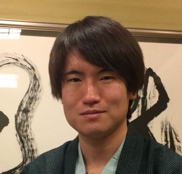

Profile
有山 知希
(Tomoki Ariyama)

About
Interests
- Natural Language Processing
- Knowledge Base
Publications
-
長澤春希*, 工藤慧音*, 宮脇峻平, 有山知希, 成田風香, 岸波洋介, 佐藤志貴, 乾健太郎.
aoba_v2 bot: 多様な応答生成モジュールを統合した雑談対話システム.
人工知能学会 言語・音声理解と対話処理研究会(SLUD)第93回研究会 第12回対話システムシンポジウム
,
November 2021. (*Equal contribution)
-
有山知希, Benjamin Heinzerling, 乾健太郎.
BERTの世界知識はどこにある？学習済み言語モデルにおける知識の局所性を解明する.
NLP若手の会（YANS）第16回シンポジウム, August 2021.
Awards
Experience
Skills
Hobbies
Contact